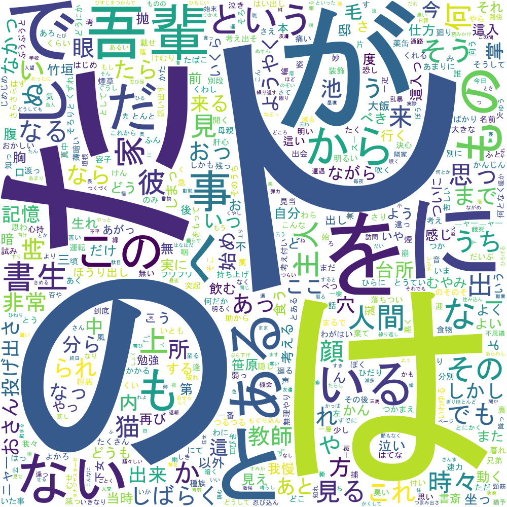

WordCloudが簡単にできるらしい
WordCloudがPythonで簡単にできるらしいのでやってみた．
WordCloudとは最近流行り?の可視化方法で，単語の頻度の高いものが大きく表示される例のやつである．
今回は日本語でwordcloudしてみる．
早速，使ってみよう．
モジュールのインスコ方法は簡単．pipでインスコできる．
pip install wordcloudついでにMeCab(形態素解析器)操作モジュールもインスコ．同じくpipでインスコできる．(MeCab本体をインスコしていない人は使えない．本体をインスコしよう．)
pip install mecabまずは，MeCabで分かち書き(単語のスペース区切り)をしてみる
import MeCab
TEXT = "すもももももももものうち"
tagger = MeCab.Tagger("-Owakati") # MeCab
wakati = tagger.parse(TEXT) # 分かち書き
print(wakati)次に，wordcloudインスタンスの設定をする．
wc = wordcloud.WordCloud(font_path=FONT_FILE,
background_color="white",
width=WIDTH,
height=HEIGHT,
collocations=False,
stopwords=STOP_WORDS,
max_words=MAX_WORDS,
regexp=r"[\w']+") # WordCloud初期化
wc.generate(parse) # WordCloud作成
wc.to_file("output.png") # 画像ファイル出力パラメータは色々設定できる．
widthやheightは出力画像のサイズ(px)，stopwordsをlist型やset型で指定できる．詳細はリファレンスを参照してほしい．
こんな感じで日本語のフォントを設定する必要がある．
FONT_FILE = "C:\Windows\Fonts\MSGOTHIC.TTC" # フォントファイル指定特にフォントのパスを弄ってなかったら，これでMSゴシック体になるはずだ．
wordcloudを実行して，画像を出力してみよう．
wc.generate(wakati) # WordCloud作成
wc.to_file("output.png") # 画像ファイル出力generateメソッドに分かち書きした文章を入れる．to_fileメソッドに出力画像のファイルパスを入れるとOKだ．
実行例
夏目漱石の『吾輩は猫である』の冒頭部分をwordcloudで可視化してみる．(サンプルプログラムではneko.txtから読み込むようにしている)
Pythonimport wordcloud
import MeCab
with open("neko.txt", "r", encoding="utf-8") as f:
CONTENTS = f.read().splitlines()
TEXT = "".join([content for content in CONTENTS if not content == ""])
STOP_WORDS = [] # ストップワードを設定(今回は設定しない)
MAX_WORDS = 2000 # 出力個数の上限
WIDTH = 1000 # 出力画像の幅
HEIGHT = 1000 # 出力画像の高さ
FONT_FILE = "C:\Windows\Fonts\MSGOTHIC.TTC" # フォントファイル指定
tagger = MeCab.Tagger("-Owakati") # MeCab
wakati = tagger.parse(TEXT) # 分かち書き
wc = wordcloud.WordCloud(font_path=FONT_FILE,
background_color="white",
width=WIDTH,
height=HEIGHT,
collocations=False,
stopwords=STOP_WORDS,
max_words=MAX_WORDS,
regexp=r"[\w']+") # WordCloud初期化
wc.generate(wakati) # WordCloud作成
wc.to_file("output.png") # 画像ファイル出力出力結果はこんな感じ．

『て』や『が』等の助詞が多く出力されてしまっていることがわかる．
いちいちストップワードに指定するのは面倒なので，形態素解析時点で不要な品詞を外す必要がある．まだまだ改良の余地がある．
気が向いたら，改良するかも．
参考